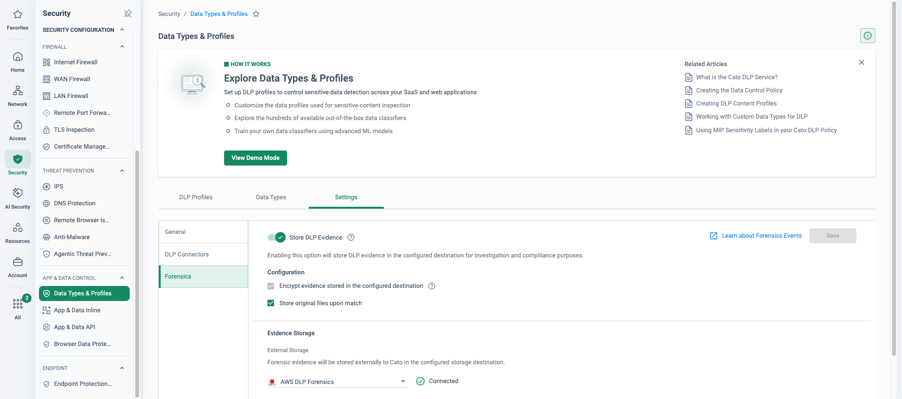
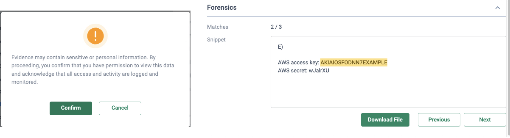

Why this matters
Security teams need to determine whether a DLP event is a real data leak or a false positive — and when an incident is real, they need forensic evidence to determine its impact: what data left, how much, and who was involved.
The objective: one-click DLP incident investigation directly from the CMA, backed by evidence the organisation owns and controls — not a black-box verdict, and not a second copy of sensitive data sitting in someone else's storage.
Real leak or false positive?
Metadata alone can't answer it
A typical DLP event tells you which rule matched, which user, which application. It does not show you the data that matched. Analysts are left guessing — so real leaks get dismissed as noise, and false positives trigger full incident-response fire drills.
Forensics without governance is a new risk
The evidence is the sensitive data. If matched content is captured into vendor-owned storage, readable by anyone with console access and with no audit of who viewed it, your DLP tool has just created a second copy of the leak.
“When your DLP flags an upload as a credit-card leak, can your analysts see exactly what matched — and can you prove afterwards who looked at that evidence?”
Where this sits in the Cato SASE platform
- Priya uploads a document containing credit-card PII towards Microsoft Copilot.
- The PoP DLP engine blocks the upload inline and raises a DLP event with its metadata.
- An encrypted forensic snippet is written to the customer's own S3 bucket under a per-account key.
- Marcus opens the Data Incident in the CMA and views the evidence under RBAC; every view is audited.
Customer-owned, encrypted, governed forensics
When a DLP rule fires, Cato writes an encrypted forensic snippet — up to and including the full file — into an S3 bucket in the customer's own AWS account. Evidence is encrypted with a per-account unique key, retrieval is governed by RBAC, and every related action — configuration change, evidence view, download — is fully audited. The analyst never leaves the CMA: the event, the incident detail and the evidence are one click apart.
The four guarantees
Forensics encryption
All forensic evidence is encrypted and stored using a per-account unique encryption key — evidence in your bucket is unreadable without your account's key.
RBAC-governed access
All forensics are governed by role-based access control. Only administrators with the right role can open the evidence — seeing the event doesn't mean seeing the data.
Audit & activity logging
Every action related to DLP Forensics is fully audited — configuration changes, evidence views, downloads. You can prove exactly who saw what, and when.
Customer-owned full-file storage
Evidence is written to an S3 bucket in your own AWS account, with full file storage supported for files up to 20 MB — you keep custody of the data.
Anatomy of a data incident
This is what the analyst sees. A user attempted to upload “Document with CC Information.doc” to Microsoft Copilot; the rule “Copilot restrict PII” matched the CC-UK DLP profile (credit-card numbers) and blocked the upload. The incident pane carries the full context — user, application, activity type, file, matched data types — and below it, the Forensics panel holds the secured evidence behind a single View Evidence button.

Point at the locked panel: the evidence exists, but even in a live demo it isn't casually exposed. Viewing it is a deliberate, role-gated, logged action — exactly the governance a DPO or compliance officer will ask about.
How to run the demo
-
Configure the AWS S3 bucket, IAM policy and role
One-time setup in the customer's (or demo tenant's) AWS account: create the S3 bucket and the IAM policy and role that let Cato write forensic evidence into it. Follow the “Configuring the Forensic Storage Connector” KB — linked under Resources below.
-
Enable the DLP forensics integration
Security → DLP Configuration
Switch on the forensics integration and add the IAM role and permissions from step 1. Note for the audience: this configuration change is itself written to the audit trail.
-
Trigger the incident: upload a PII file to Copilot
As the demo user, upload a file containing sensitive PII — credit-card data works well — to Microsoft Copilot. The DLP rule blocks the upload inline; the user sees the block, and the forensic snippet is captured to the S3 bucket at the same moment.
-
Find the event and open its forensics
Monitor → Data Protection Dashboard
Locate the block event you just generated and click “View Forensics” in the evidence field. This pivots straight from the dashboard into the data incident — no exporting, no second console.
-
Open the incident and view the evidence
On the Data Incident page, walk the details (user, app, rule, matched data types), then click “View Evidence” to view and download the data snippet — the exact content that matched. Close by showing the view being recorded in Administration → Audit Trail: leak confirmed, impact known, access proven.
How to prove it in the customer's tenant
This is an incident-workflow pilot: one staged DLP incident, built from fictional test data, followed end to end — event, incident, secured evidence, audit — the way the customer's own team would investigate it. Policy build-out, match-report tuning and block promotion belong to the sibling PoV on Data Security with CASB & DLP; this one proves that when a violation happens, the investigation holds up. Agree the criteria below before switching anything on — the frame is Running a Cato PoV — and because the evidence is sensitive data, the customer's data-protection officer belongs in the scope workshop, not the wrap-up.
| Success criterion | What is demonstrated | Evidence artefact | Where it lives |
|---|---|---|---|
| Staged incident traced end to end | A seeded fictional file fires a monitor rule; the trail runs event → Data Incident → secured evidence pane → matched content, without leaving the CMA. | Dated screenshot of each hop, ending on the evidence viewer | Monitor → Data Protection Dashboard |
| Chain of custody articulated | Where evidence lives (the customer's own bucket), that encryption cannot be switched off, and exactly who can open it — written down and agreed with the DPO. | One-page custody note: storage, encryption, named viewers, retention owner | Security → Data Types & Profiles |
| Attribution complete | The incident carries the full chain: named user, device, application, activity type, matched data types and the action taken — no second console needed. | Data Incident detail screenshot with every attribution field populated | Monitor → Events |
| Incident report exported for the DPO | The DLP violation history leaves the console as a file the data-protection officer can take into their own records. | Filtered DLP events export (CSV), annotated with the staged incident marked | Monitor → Events |
| Evidence access proven role-restricted | A control admin without the DLP Forensics permission sees the incident but cannot open the evidence — the negative test that makes the RBAC story credible. | Side-by-side screenshots: investigator sees content, control admin refused | Administration → Admins |
- Licences: Data Control rules require the DLP licence on top of CASB — no DLP licence, no violations, no evidence. Confirm the trial covers it.
- A working Data Control policy in monitor mode — this pilot investigates violations, it doesn't build the policy. Stage the policy per Data Security with CASB & DLP, with TLS inspection already live on the pilot group (TLS Inspection: Staged Rollout Playbook).
- Customer-owned cloud storage: an Amazon S3 bucket (or Google Cloud equivalent) in the customer's own account, in a region where AWS STS is active — the China region is not supported.
- Identity integration syncing the pilot group — an incident attributed to an IP address proves nothing (see Identity Integration Design).
- The DPO (or privacy owner) named and present for the storage decisions in step 2 — evidence capture is configured with them, never before them.
- Fictional test data prepared: a seeded document of fabricated card numbers or invented PII. The staged incident never uses live customer data.
Configuration walkthrough
-
Connect the forensic storage connector
Resources → Integrations
In the customer's AWS account, create the bucket, IAM policy and role, then add the integration in the CMA: SaaS Application Amazon S3, Auth AWS Assume Role, plus the Role ARN, region, bucket and folder path (Amazon S3: Configuring the Forensic Storage Connector). The point to narrate: Cato is being granted write access to their bucket — custody starts customer-side and stays there.
-
Switch on evidence capture — with the DPO in the room
Security → Data Types & Profiles
On the Settings tab, enable Store DLP Evidence. Two decisions live here and both belong to the DPO: whether to tick Store original files upon match (full files rather than matched snippets — start snippet-only), and noting that the Encrypt evidence stored in the configured destination checkbox cannot be unticked — encryption is not optional (Investigating DLP Violations with Forensic Evidence). Note that image file types are not supported as evidence, and capture applies from enablement onwards — nothing is captured retroactively.

Data Types & Profiles → Settings → Forensics — the whole DPO conversation on one screen. Point at the encryption checkbox: ticked and greyed out, because it cannot be unticked — encryption of stored evidence is not a policy choice. Store original files upon match is the choice that is theirs (ticked here; snippet-only is the conservative start), and the external AWS destination below reads Connected — evidence lands in the customer's own bucket, custody customer-side from the first capture. -
Scope the staged-incident monitor rule
Security → App & Data Inline
Add one narrow Data Control rule for the pilot: source = the single test user (Priya), the agreed content profile, upload activity, in a non-blocking posture with Events tracking on. Keep it surgical — the rule exists to generate one clean, attributable violation from the seeded file, not to rediscover the estate. Remember the scanning envelope the evidence depends on: files up to 50 MB, at most 20 data types across a rule's profiles (Creating DLP Content Profiles).
-
Grant the investigator role — and keep a control admin
Administration → Admins
Only admins holding the DLP Forensics permission can view forensic evidence within an event; grant it to the named investigators only, via a custom role where the customer uses them. Deliberately leave a second admin — the control — without it. That admin is your fifth success criterion: the refusal is the demonstration.
-
Stage the incident and walk the trail
Monitor → Data Protection Dashboard
Priya uploads the seeded fictional file; the monitor rule fires. From the dashboard's top violating rules, expand the event and click View forensics in the Evidence field; the Data Incident panel opens with the full attribution chain — user, device, application, activity, matched data types, action (the anatomy is the screenshot in In the CMA above). In the Forensics section, click View Evidence, confirm, and show the matched snippet — or Download File where originals are stored. Allow for the few minutes it can take after the event before the file is available; dated screenshots of every hop go into the evidence doc.

The trail's destination, from a staged incident (lab tenant, synthetic test file): View Evidence first demands a confirmation that the access is logged and monitored (left) — the consent gate that answers the objection that a match report is itself a data-exposure risk — and the snippet then shows the matched value highlighted in context with a 2-of-3 match counter (right). The key shown is AWS's own documented example value; every one of these views lands in the Audit Trail you export in the next step. -
Prove the governance, export the report
Administration → Audit Trail Monitor → Events
Repeat the evidence view as the control admin and screenshot the refusal. Then open the Audit Trail and show the pilot's own configuration story — the Store DLP Evidence enablement and permission grants, each with previous and new values, retained for 12 months (Using the Audit Trail). Close by filtering Events to the DLP rule and exporting the incident history for the DPO — up to 250,000 events to a file, queried over a window of up to 31 days (Analyzing Events in Your Network).
Troubleshooting — when the evidence doesn't land
No evidence pane on the incident
Check the chain in order: DLP licence active, Store DLP Evidence enabled, storage connector healthy (Role ARN, region, STS-active). And remember capture starts at enablement — an event from before the toggle has no evidence behind it.
Evidence missing on some events
The scanning envelope: files over 50 MB aren't scanned, image file types aren't supported as evidence, and the policy fails open on uncompleted scans by default. Check file size and type in the event detail before suspecting the connector.
Event fired, file not there yet
Evidence can take a few minutes to become available for download after the event is generated. Build the pause into the demo script rather than refreshing anxiously in front of the customer.
View Evidence refused
The admin lacks the DLP Forensics permission — which is the feature working, not failing. Check who holds the permission before the session, and use the refusal deliberately as the RBAC proof point.
Over-capture concerns from the privacy owner
Meet them honestly: keep snippet-only (originals off), scope the rule to the pilot user and the agreed profile, and capture only what the policy needs to adjudicate. A DLP pilot that hoovers content it doesn't need loses the DPO — and the deal.
Incident attributes an IP, not a person
Identity sync lag or an unsynced pilot user. Fix the IdP integration before staging the incident — an investigation criterion that ends at an IP address fails on attribution, whatever the evidence shows.
Gotchas & exit
- Evidence storage is a DPO conversation, not a default-on: captured content is itself sensitive personal data being processed. Snippet vs original file, which profiles capture, and who holds the viewer permission are the DPO's decisions to make — recorded in the custody note.
- Retention is the customer's lever: the public KB sets no Cato-side retention for evidence — it lives in the customer's own bucket, so lifecycle and deletion policy are theirs to define. Agree the retention line in the custody note rather than leaving it implicit.
- Audit coverage — demonstrate, don't assert: the public KB documents auditing of configuration changes (12 months, previous and new values); per-view evidence logging is the platform's design intent, so prove it live in your tenant during week one and screenshot what the trail records, rather than asserting it unseen.
- Evidence windows: the Events page queries at most 31 days at a time — export the incident history as it lands, not at the wrap-up.
- Scope boundary: if the pilot surfaces noisy matching or a block-promotion appetite, that's the sibling PoV on Data Security with CASB & DLP — park it on the next-steps register rather than absorbing it here.
- Clean exit: delete the staged-incident rule, switch off Store DLP Evidence, revoke the DLP Forensics permission grants, and remove the storage integration if not proceeding. The seeded-evidence objects sit in the customer's bucket — purging or retaining them is their call, and handing that decision over is the custody story ending exactly as promised.